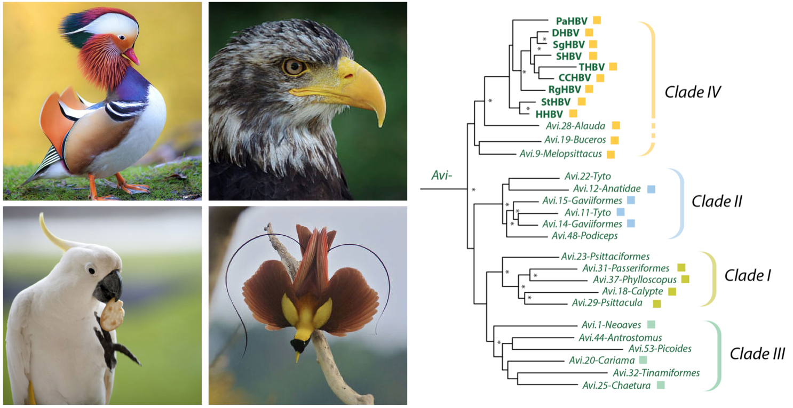

Hepadnaviridae-GLUE: Highlights
These highlights pages aim to provide a brief overview of selected data items contained within the Hepadnaviridae-GLUE project, and to illustrate how it can be used to implement reproducible comparative analyses. .
Avi.1-Neoaves
First eHBV to be reported. Very ancient origin - found in many species.

Left panel: distribution of Avi.1.Neoaves insertions. The insertion is absent in ducks and chickens - the 'Galloanserae' - which are Analysis using Hepadnaviridae-GLUE has revealed that at least four distinct subgroups of avihepadnavirus have existed during hepadnavirus evolution
Raw data in tabular format are can be found at the following links/directories:
Avi.14-Gavia and Avi.15-Gavia
These two eHBV loci in the genome of the common loon (Gavia immer) derive from germline incorporation events involving ancient avihepadnaviruses. The viruses involved belong to a characteristic lineage, which we've labeled 'clade II'. So far these viruses are only known from eHBV sequences, and it remains unknown when any modern representatives still circulate in birds.

Left to right: (i) The common loon (Gavia immer) contains two eHBV insertions derived from clade II aviheapdnaviruses. (ii) Emperor penguins also contain clade II avihepadnaviruses, indicating their biogeographic host range could extend to the Antarctic; eHBV insertions derived from clade II were also identified in (iii) Great crested grebe (Podiceps cristatus) and; (iv) barn owl (Tyto alba)
The two insertions are similar in that they both span near-complete hepadnaviral genomes. Remarkably, however, they appear to have been acquired in entirely different germline integration events. In our recent paper we show that. consistent with this, both insertions show a greater degree of divergence in a highly region of the Surface protein associated with binding to host receptors than they do in other genomic regions.
Links to related data items:
Avi.27-Phalacrocoracidae
A multicopy eHBV LINEAGE.

Cormorants have a multi-copy eHBV lineage in th- left to right:
Avi.28-Alauda
All extant avihepadnaviruses fall into one subgroup (which we labeled 'IV' in our study).
Avi.28.Alauda is the most closely related EVE yet to extant avihepdanviruses. It groups basal to the clade IV avihepadnaviruses, and encodes a Surface protein that is relatively closely related to those found among extant avihepadnaviruses.

Eurasian skylark (Alauda arvensis)
Avi.28.Alauda is the most closely related EVE yet to extant avihepdanviruses. It groups basal to the clade IV avihepadnaviruses, and encodes a Surface protein that is relatively closely related to those found among extant avihepadnaviruses.
Links to related data items:
Meta.1-Sauria
Meta.1.Sauria is - we think - the oldest EVE ever described. We identified putatively orthologous copies in a lizard - the tuatara (Sphenodon) - as well as in multiple avian species.
This insertion also provides important new insights into the evolution of hepadnaviruses. It belongs to the recently described Metahepadnavirus genus. So far, metahepadnaviruses have only been identifiied in fish. Unexpectedly, these fish viruses were found to group relatively closely with mammalian hepadnaviruses (genus Orthohepadnavirus). This seemed to imply a transfer of viruses between fish and mammals!

Species containing Meta.1-Sauria insertions in their genomes - left to right:
Raw data in tabular format are can be found at the following links/directories: